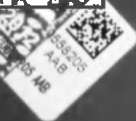
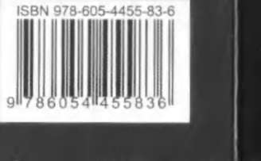
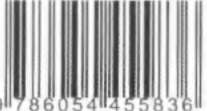

339
R. ,hsan Eliaçık
Sosyal İslam
sıkıya tutamadığımızı da. Tanrının, bu büyük evini, herkes içinde
Ah kardeşlerim, bir Samoa köyünü içine alacak kadar kocaman
kendine bir yer bulsun ve mutlu bir yaşam sürsün diye verdiğini de
bir kulübesi (evi!) olup da, bir yolcuya tek geceliğine bile çatısının
görebilirdi. Bu evin yeterince büyük olduğunu, herkesin payına bir
altında yer vermeyen adam hakkında ne düşünürsünüz? Elinde
lekecik de olsa güneş ışığı, bir tutam mutluluk düşeceğini, herkes
koca bir hevenk muz olan, ama karşısında açlık çekip yakaran biri-
için küçük bir palmiye gölgesi ve ayaklarını basabileceğini bir yer
ne bir tane bile m u z vermeyen adam hakkında ne düşünürsünüz?
olduğunu görebilirdi. Tanrı nasıl olurda çocuklarından birini unu-
Gözlerinizdeki kızgınlığı, dudaklarınızdaki aşağılamayı görüyo-
tur? Ama yine de birçokları Tanrı nın onlara bahşettiği topraklar-
rum. Beyaz adam (papalagi) her saat b u n u yapar. Yüzlerce döşeği
dan küçük bir parça edinmek için didinip durur.
olsa döşeksiz birisine bir tanesini bile vermez. Üstüne üstlük bir
Beyaz adam Tanrının buyruklarına kulaklarını tıkayıp yerine
de döşeği olmadığı için karşısındakini suçlar, sitem eder. Kulübesi
kendi yasalarını geçirdiği için Tanrı da onun mülkleri üzerine bir
(evi) tavana kadar yiyecekle dolu olsa, ailesine yıllarca yetecek olsa
sürü düşman salar. O n u n "benim" dediği şeyi bozsun diye yağmuru
bile çıkıp yiyeceği olmayan, solgun ve aç birisini aramaz. Oysa aç ve
ve sıcaklığı, ihtiyarlığı, ufalanmayı ve çürümeyi gönderir. Hazinele-
solgun bir dolu papalagi (beyaz adam) vardır.
rinin üstüne ateşin gucunu ve fırtınaları yollar. Ama hepsinden öte
Palmiye olgunlaşınca meyvelerini ve yapraklarını döker. Beyaz
beyaz adamın (papalagi) r u h u n a korkuyu yerleştirir. Ele geçirdiği
adam ise, yapraklarını ve meyvelerini dökmek istemeyen palmiye-
şeylerin korkusudur bu. Beyaz adamın uykusu hiçbir zaman derin-
ye gibi yaşar. "Bunlar benim, siz yiyemezsiniz!" Peki, o zaman pal-
leşemez. G ü n d ü z topladıkları gece uçup gitmesin diye uyanık ol-
miye yeni meyvelerini nasıl taşıyacak? Palmiyenin bilgeliği beyaz
mak zorundadır çünkü. "Benim" dediği şeyler nasıl da başına bela
adamınınkinden kat kat yüksektir.
olur, onunla alay eder ve şöyle der: "Seni beni Tanrıdan aldığın için
Bizim aramızda daha çok şeye sahip olanlar vardır. Birçok dö-
ben de sana eziyet ediyorum, acı çektiriyorum."
şeği ve domuzu olan kabile şefine saygı gösteririz. Ama saygımız
Ama Tanrı, beyaz adama korkudan daha beter bir ceza vermiş.
yalnızca şefin kendisinedir, döşeklerine ve domuzlarına değil. Za-
"Benim" diyenlerle, benim diyeceği bir şeyi çok az olanlar ya da hiç
ten onları alofa (bağış/infak!) olarak verenler bizleriz; sevgimizi
olmayanlar arasında sürüp giden bir savaş sarmış başına. Bu savaş
göstermek, yiğitliğini/şerefini (kerem!) ve aklını övmek için. Ama
çetindir ve sabah akşam durmak bilmez. Bu savaş herkese acı verir,
beyaz adam kardeşlerinin döşeklerine ve domuzlarına saygı göste-
yaşama sevincini kemirir. Sahip olanlar vermek zorundadır ama hiç-
rir, yoksa onların yiğitliğiyle, aklıyla ilgilendiği yoktur. Döşeği ve
bir şey vermek istemezler. Sahip olamayanlar ise sahip olmak isterler
d o m u z u olmayan kardeşin saygınlığı ya hiç yoktur ya da yok dene-
ama hiçbir şey alamazlar. Üstelik bunların da ulvi savaşçılar oldukları
cek kadar azdır.
söylenemez. Ya soyguna geç kalmışlardır, ya beceriksizdirler ya da
Döşekler ve domuzlar yoksullara ve açlara kendi başına gideme-
ellerine fırsat geçmemiştir. Beyazların ülkesinde her şeyi Tanrı nın el-
diklerinden, beyaz adam onları kardeşlerine götürme gereği duy-
lerine teslim etmeyi öneren bir çağrı hemen hemen hiç duyulmaz...
maz. Çünkü saygı gösterdiği kardeşi değil; döşeği ve domuzudur.
338
339
R. İhsan Eliaçık
Sosyal, İslam
Böyle olunca da onları kendine saklamayı yeğler. Kardeşine saygı
kesilen ve ölmek üzere olan arkadaşının üzerine kapanıp hıçkıra
gösterseydi, onlarla benim-senin kavgasına girmeseydi, ona döşek
hıçkıra ağlar. Anarşist isyanı, rahibelikten gelen kültür ile birleşince
verir, benim dediklerini paylaşırdı. O n u gecenin karanlığında dışa-
dinlerdeki "cennet" ülküsü şahane bir tanıma kavuşur ve film öyle
rıda bırakmaktansa döşeğini onunla paylaşırdı.
biter:
A m a beyaz adam, Tanrı nın palmiyeyi, muzu, leziz kulkas kök-
"Tanrı nın hükümranlığının süreceği zamanlarda... Bir gün bu
lerini, o r m a n ı n bütün kuşlarını, denizin bütün balıklarını hepimiz
dünya artık 'dünya' diye anılmayacak. O artık 'özgürlük' diye anı-
sevinelim, mutlu olalım diye verdiğini bilmiyor. Diğerleri açlık ve
lacak. O gün insanları sömürenler ebedi karanlığa m a h k û m ola-
yokluk çekerken, sadece birkaçımız yararlanalım diye vermediğini
caklar. Ve ağlayarak dişlerini gıcırdatacaklar. Ve cennetin melekleri
bilmiyor. Tanrı birisine fazla vermişse, o kişi meyveler elinde çü-
ta yukarılarda her zamankinden daha mavi ve daha parlak olan
rümesin diye ondan kardeşine vermelidir. Tanrı bütün insanlara
özgürlük yıldızına bakarak keyif içinde şarkı söyleyecekler. Çünkü
ellerini uzatır. O, birinin diğerinden daha fazla şeye sahip olmasını
orada barışın ve adaletin hükümranlığı sürecek. Çünkü orası ebedi
istemez. Birinin "Ben güneşte yatacağım, senin yerin gölge." deme-
'cennet' olacak ve artık ölüm olmayacak..."
sini istemez. Hepimizin yeri güneşin altıdır...
Bu sesin zamanı ve mekânı yok. Kâh Samoa yerlilerinden, kâh
Tanrı nın her şeyi adaletli elinde tuttuğu yerde ne kavga olur ne
Kızılderili irfanından, kâh palmiye, kâh zeytin, kâh incir ağaçları-
de yokluk. Hilekâr beyaz adam, hiçbir şeyin Tanrı ya ait olmadığı
nın altından, kâh Tur-i Sinadan, kâh Beled-i Eminden gelir. Kâh
mavalını bize yutturmaya çalışır. "Elinde tuttuğun her şey senindir"
anarşist kadınların rahibesinde hıçkırıklarından yayılır.
der. Bu tür saçma sözlere kulak tıkayın ve vicdanınıza sıkı sıkıya
Hepsi aynı kandilin ışığıdır.
sarılın. Her şey Tanrınındır!" ("Papalagi Tanrıyı Yoksullaştırmış"
Hep aynı şeyi söylerler.
başlıklı bölüm, s. 58-64).
Tanırsınız onu; babanızı tanıdığınız gibi tanırsınız.
Dinle beyaz adam!
O n u bir tek sen tanıyamıyorsun.
Ey Samoa yerlilerinin bilgesi Tuiavii! Işığını gördüm, mesajını
Gözlerindeki ve kulaklarındaki perdeyi kaldır.
aldım. Her an bir iş ve oluşta olana yemin olsun ki, insanoğluna
Sağır, kör ve dilsiz olmaktan kurtul.
ilham ederek, perde gerisinden ve elçi seçip vahiy ederek her daim
Belki o zaman anlarsın "beyaz adam."
seslenene yemin olsun ki tanıdım.
İspanyol iç savaşındaki anarşist kadınların mücadelesini anlatan
(Tavsiye kitap: Göğü Delen Adam; çev. Levent Tayla, Ayrıntı, 7. basını, İst. 2010).
Libertarias filmindeki son sahne gibi tanıdım.
(Tavsiye film: Libertarias; yön. Vicente Aranda, İspanya, 1997)
Orada da kiliseden ayrılarak anarşist kadınlara katılan bir ra-
hibe, askerlerce kendisi gibi tecavüze uğrayan, üstelik de boğazı
242 340



SOSYAL İSLAM
Şunu unutmayın ki; yakınlık bağları (aile, yakın çevre, komşular,
a r k a d a ş çevresi, mahalle) ç ö z ü l d ü k ç e p u s u d a bekleyen bankaların
eline düşeceksiniz. H e r C u m a imam m i n b e r d e n ş u ayeti o k u y u p
öyle iniyor:"Allah adaleti, ihsanı ve yakın çevrenizi (zi'l-gurba)
g ö z e t m e y i / v e r m e y i e m r e d i y o r . " (Nahl; 90)
Fakat dinleyen kim, anlayan n e r e d e ?
İnsanların artık kendi a n n e , baba, akraba, k a r d e ş ve a r k a d a ş ı n a bile
parasını v e r e m e y i p güven içinde bankalara g ö t ü r ü p yatırmasının,
hangi ç ö z ü l m e , yalnızlaşma ve a r k a s ı n d a n gelen k o r k u (havf) ve
kaygı (huzn)'dan beslendiği sanırım anlaşılıyor.
Bu, t o p l u m d a k i yakınlık bağlarının (zi'l-gurba) yani "sosyal"in
ç ö k ü ş ü d ü r . Burada o r t a y a k o n a n İslam'ın " s o s y a l " içeriğinin ne anlama geldiğini t e k r a r d ü ş ü n ü n . D ü ş ü n m e k l e kalmayın
güncelleştirin.
İşte bu kitap, yalnızlaşmış, bir başına kalmış (birey!) y u r d u m
insanının b o y n u n a geçirilen tasmaların, zincirlerin,
b o y u n d u r u k l a r ı n nasıl kırılıp atılacağının ve p r o f e s y o n e l hırsız
şebekelerinin ellerinin t o p l u m d a n nasıl kesileceğinin de
panzehiridir.
Bunun yolu "Sosyal İslam" anlayışının siyasi, e k o n o m i - p o l i t i k o l a r a k da diriltilmesidir. Böylece b o y u n d u r u k l a r kırılacak, k ö l e l e r
ö z g ü r l e ş e c e k , yoksullar doyacak, açların yüzü gülecek ve ezilenler
y e r y ü z ü n ü n ö n d e r i olacaktır.
İlahî vaat bu y ö n d e ve g e r ç e k l e ş m e k için bir " k e n d i n d e n z u h u r "
b e k l e m e k t e .
1 9 T L